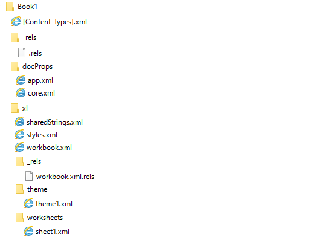

(※ 2017 年 2 月 20 日に Japan Office Developer Support Blog に公開した情報のアーカイブです。)
こんにちは、Office 開発 サポート チームの中村です。
今回の記事では、Office のリボンをカスタマイズする方法について記載します。このテーマについては、複数回に渡ってご紹介していく予定ですが、今回はまず、概要を記載したいと思います。
1. Office リボンのカスタマイズ方法
Office 2003 までは、メニューのカスタマイズを行うときには、Commandbars オブジェクトを用いて VBA などのプログラムからカスタマイズしていました。Office 2007 からメニューがリボンに変更され、これに伴って新しいカスタマイズ方法が登場しました。Office 2007 以降でも Commandbars オブジェクトを利用してもある程度メニューをカスタマイズすることはできますが、この方法ではカスタマイズできない項目もあり、現在弊社ではリボンに対応した新しい方法でのカスタマイズを推奨しています。
リボンに対応したカスタマイズについては、以下のような方法があります。
a. OpenXML 形式のファイルにカスタム XML を追加してカスタマイズを行う (カスタマイズ反映はファイル単位)
b. VSTO から XML を用いてカスタマイズを行う (カスタマイズ反映はファイル単位もしくは Office アプリケーション単位)
c. VSTO からビジュアルなデザイナーを用いてカスタマイズを行う (カスタマイズ反映はファイル単位もしくは Office アプリケーション単位)
a と b の場合、開発者は XML でリボンのカスタマイズ情報を記載します。a の場合は Office ファイル内に、b は VSTO カスタマイズ内に XMLファイルを作成して XML コードを実装します。一方 c の場合は、開発者は Visual Studio の機能を用いて GUI 上でリボンをデザインします。ビジュアルなデザイナーでは対応できないカスタマイズもありますが、GUI でデザインできるため、開発が容易というメリットがあります。
b や c は、Visual Studio 上で XML ファイルやコード ファイルが見えるため、どこにカスタマイズ情報を追加すればよいかわからない、といったことはあまりないと思います。しかしながら、a の場合は、Office ファイルの中に XML ファイルを追加する、と言われてもピンと来ない方もいらっしゃるかと思います。これについて、次に説明します。
2. OpenXML 形式の Office ファイルに XML ファイルを追加する
Office 2007 以降、拡張子 .xlsx / .docx / .pptx などの新しいファイル形式 (Office 2007 形式) が追加され、現在はこの形式が既定の形式です。この Office 2007 形式のファイルの内部構造は、OpenXML ファイルの集合体となっています。
例えば、シンプルな Excel 2007 形式ファイル (.xlsx) を作成し、拡張子を .zip に変更して展開すると以下のようなフォルダ構成で .xml ファイルが格納されています。

図 1. Excel 2007 形式ファイルの内部構造
参考)
タイトル : Office (2007) Open XML ファイル形式の概要
アドレス : https://msdn.microsoft.com/ja-jp/library/aa338205(v=office.12).aspx
a のカスタマイズ方法では、この zip ファイルの中に、開発者が作成したリボンのカスタマイズ情報 XML で記述した .xml ファイルと、そこにリボンのカスタマイズ情報が記述されているという情報を .rels ファイルに追加します。このようにカスタマイズを組み込むと、このファイルを開くとリボンがカスタマイズされた状態で表示されます。アドインやテンプレート ファイルとして作成してすれば、特定のファイルだけでなく、常にカスタマイズを反映することもできます。
なお この Office ファイルに XML ファイルを追加する方法でのカスタマイズは、Office 2007 形式のファイルでしか使用することができません。Office 97-2003 形式 (.xls / .doc / .ppt など) のファイルはバイナリ形式のため、ファイルに XML ファイルを追加してカスタマイズを行うことはできません。この場合は、従来通り VBA などから Commandbars オブジェクトを利用するか、b もしくは c の方法でカスタマイズすることになります。
先述の通り、Office 2007 形式では、VBA ではなく、リボンに対応したカスタマイズを推奨していますので、ぜひここでご紹介した XML でのカスタマイズに挑戦してみてください。
3. 公開情報
今後もこのブログでリボン カスタマイズに関する情報をお伝えしていく予定ですが、すでに公開情報でサンプルを基にした手順などを紹介しています。すぐに取り組みたい場合は、ぜひこちらをご参照ください。
リボン カスタマイズに関する公開情報
各資料内からリンクされている関連ページで詳細を説明している項目もありますので、合わせてご参照ください。
タイトル : Office 2007 リボンのカスタマイズ ガイド
アドレス : http://technet.microsoft.com/ja-jp/magazine/2009.05.ribbon.aspx
タイトル : Office 2010 Fluent UI カスタマイズの基礎知識
アドレス : https://msdn.microsoft.com/ja-jp/library/office/ff936211(v=office.14).aspx
タイトル : Office 2010 のコンテキスト メニューのカスタマイズ
アドレス : https://msdn.microsoft.com/ja-jp/library/office/ee691832(v=office.14).aspx
タイトル : すべてのバージョンの Microsoft Excel でコンテキスト メニューをカスタマイズする
アドレス : https://msdn.microsoft.com/ja-jp/library/gg469862.aspx
タイトル : リボンの概要
アドレス : https://msdn.microsoft.com/ja-jp/library/bb386097.aspx
次回の本テーマの投稿では、a のファイルにカスタム XML を追加する方法で実際にリボンをカスタマイズする手順を解説する予定です。b や c の方法や、様々な内容のカスタマイズを行う XML のサンプルなども順次公開していきたいと考えています。
今回の投稿は以上です。
本情報の内容 (添付文書、リンク先などを含む) は、作成日時点でのものであり、予告なく変更される場合があります。